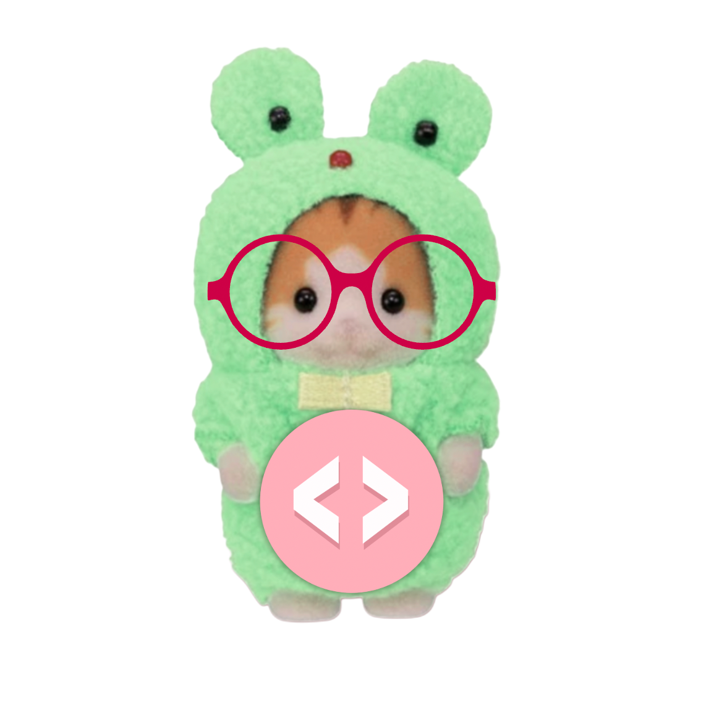
Hi there, thanks for stopping by! Welcome to my IML300 website, which is a home to all
projects created in Spring of 2026.
In all honesty, I never thought I'd survive this class because coding is what made me the most nervous about
Media Arts + Practice at USC. I had never thought of myself as very technologically literate but MA+P has
shown me that I can do a lot of things I am afraid of —even coding! Writing code and designing my own web
pages has become an exciting tool in my arsenal as a creative. I am proud of myself for sticking with it. I
invite you to explore my projects and see how I've grown in this class!
Artist Presentation
Projects
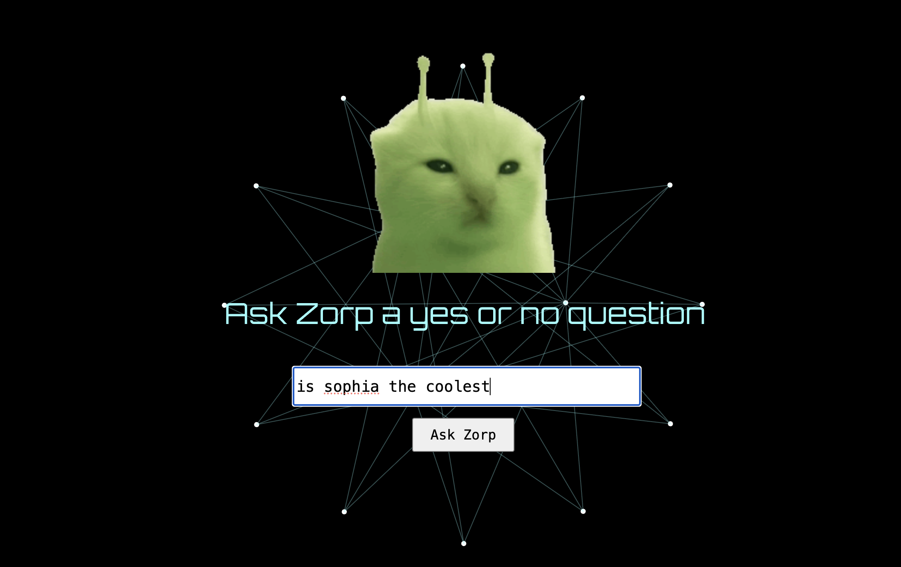
Project 1: Interactive Audio & Visual with p5.js
Welcome to the chambers of the intergalactic supreme leader, Zorp. Zorp can tell your future with the press of a button. Simply ask Zorp a yes or no question and they will reach into your past, present and future to give you a prediction. For a little fun, click on "Party" to make zorp dance and to hear them sing their own special cover of "Staying Alive" by the Beegees. I remember I was super stressed at the time that this was assigned so I wanted to make something really silly just to make myself laugh. I had so much fun creating it and I hope Zorp brings you some joy too :)
Zorp the Intergalactic Fortune Teller Link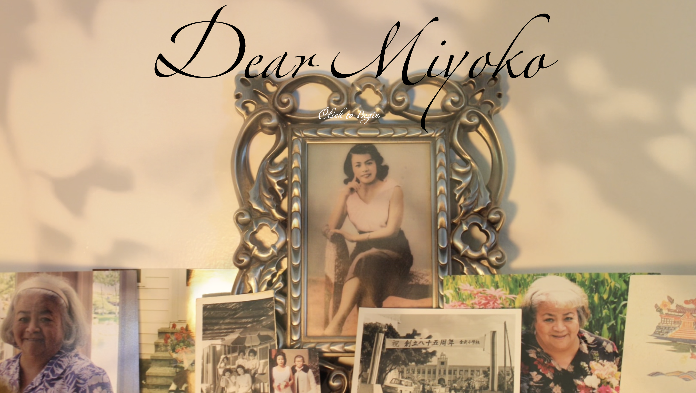
Project 2: HyperNarrative
This project is very special to me. My relationship with my grandmother is a driving force behind a lot of my work and something that I always find myself returning to. Though our dynamic was never perfect, there was so much love between us. This project is my attempt to understand her after her passing, through the language barrier and a generational gap, to weave something out of what she left behind. The narrative follows conversations between the two of us, held in the pages of her address book turned vocabulary notebook, an unusual record of her life and the woman she was.
'Dear Miyoko' concept doc 'Dear Miyoko' Site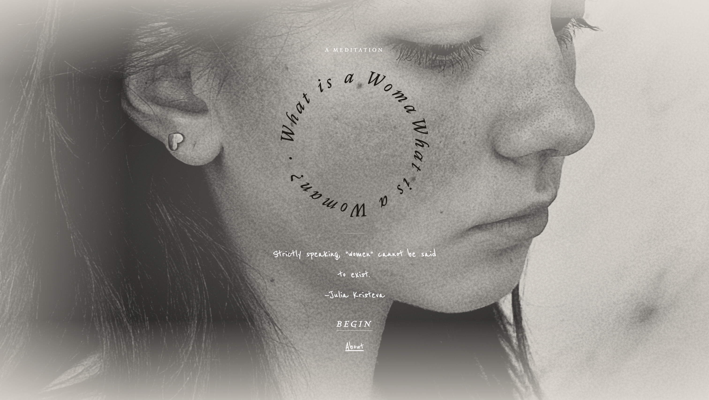
Project 3: Networked Care
This project seeks to untangle and make sense of my relationship with “womanhood”. It blends my own personal reflections with the expansive conversations around gender theory, zooming in and out of such a complicated question. Ultimately, its an effort to explain something of myself and my feelings about being a woman to my mom. I often have a hard time expressing my own definition of gender to my mom, as something fluid and performative. The website prompts visitors to reflect on their own relationship with gender and hosts a space for communities to share their responses with others.
'What is a Woman?' concept doc 'What is a Woman?' Sitep5.js Exercises
Vibe Coded Projects
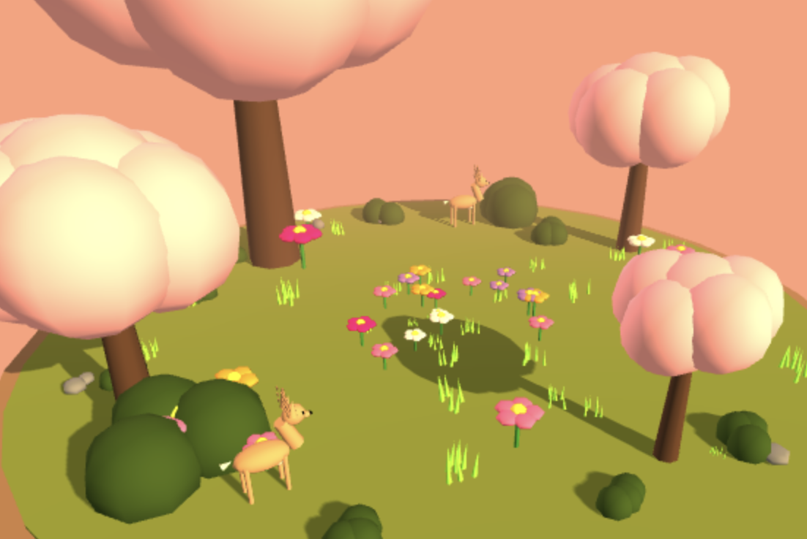
Week one's vibe coding assignment was to get familiar with ai tools and make something of our own. I made a little interactive terrarium with animated deer that users can have fun with.
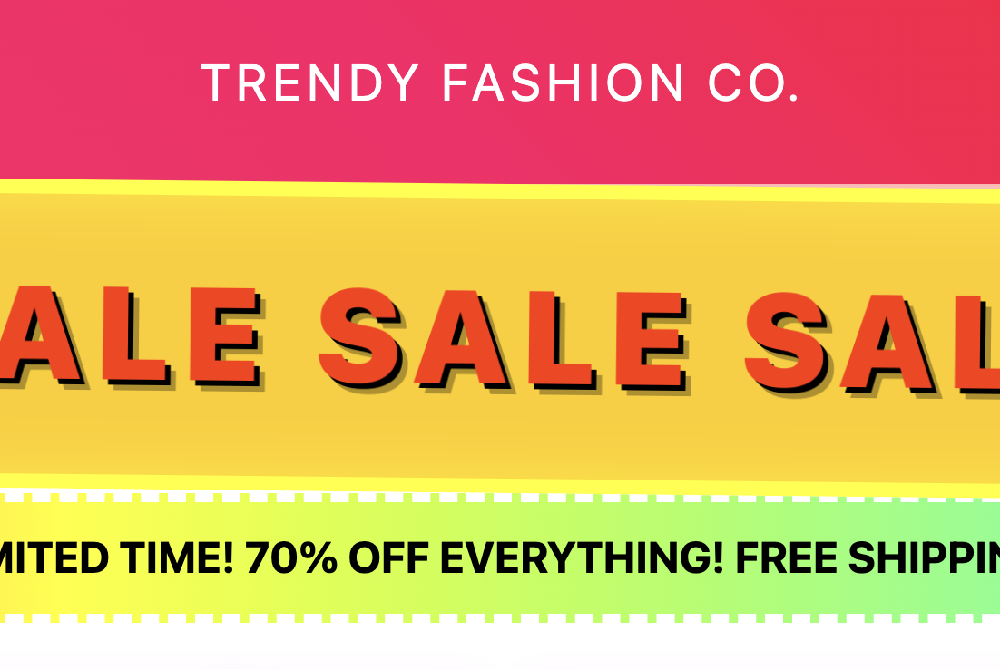
For week two's vibe coding exercise, I made a website that forces you to confront the realities of fast fashion. I was inspired by "Rich User Experience, UX and Desktopization of War" by Olia Lialina and how she approaches the topic of interfaces that hide the human consequences. I thought the idea that people no longer have to think about or understand their actions online was interesting. My site is a deliberately interruptive web experience that forces users to pause before interaction and reflect on the reality of their actions.
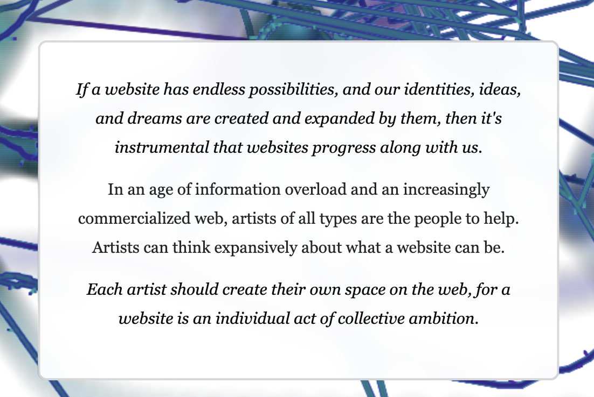
For this vibe coding assignment I made a website inspired by Laurel Schwulst's article. I liked the idea of the web being a living breathing thing that evolves alongside us so my website is designed to create alongside the user.
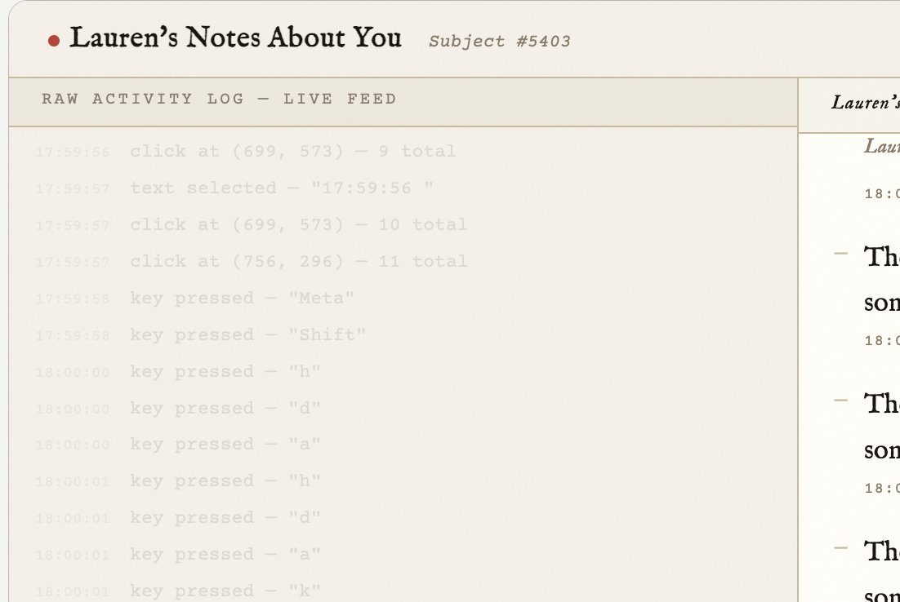
On week four I vibe coded something inspired by Lauren McCarthy's human Alexa. The website is a reflection on the way surveillance systems harvest our data and form profiles based on our every move. Kind of like the idea that Alexa is always listening, gathering information about your habits and routines.
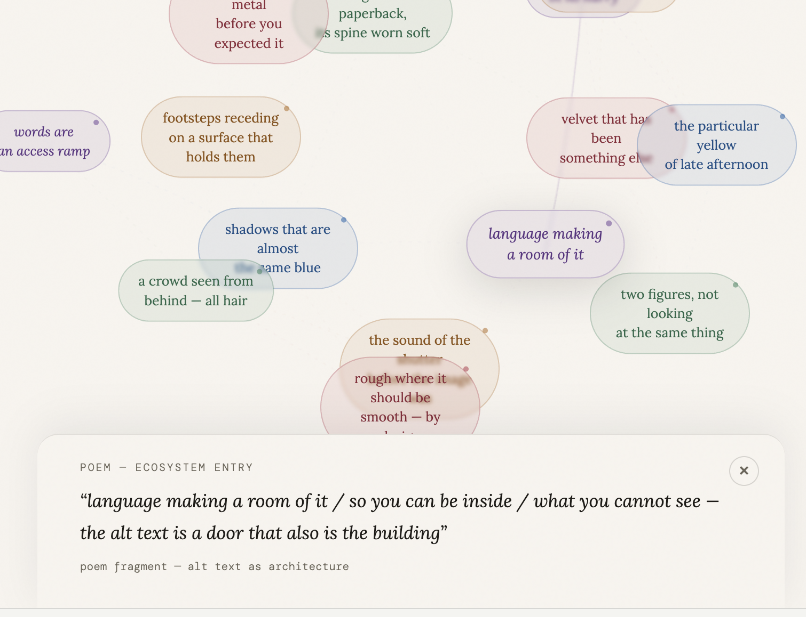
In week five, I had the pleasure of visiting Bojana Coklyat and Shannon Finnegan's "Alt Text as Poetry". I was inspired by how they called the community an "ecosystem of alt-text". I thought that was a really beautiful way of putting it so I wanted to vibe code a website that allows you to explore this ecosystem.
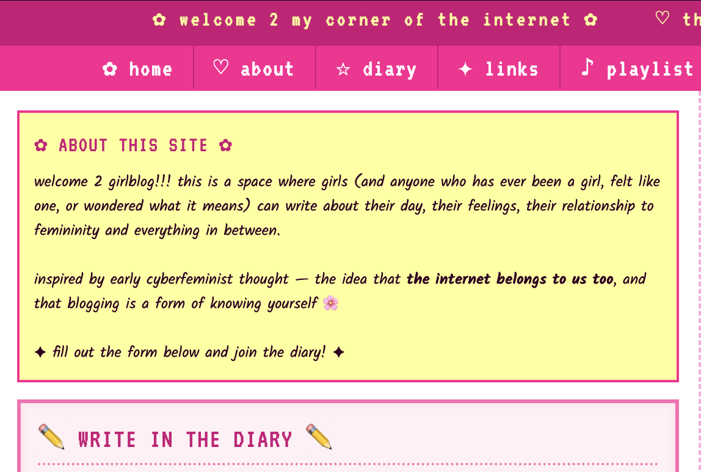
For week six, I was inspired by an author I found on the Cyberfeminism index, Ester Freider. In her dissertation, she argues that the Tumblr "girlblogs" of the early internet days were a space of nomadic reinvention and community. For my vibe code, I made my own "girl blog" where you can type in some info about yourself and submit it to the site for other people to find. Try it out, leave a comment!
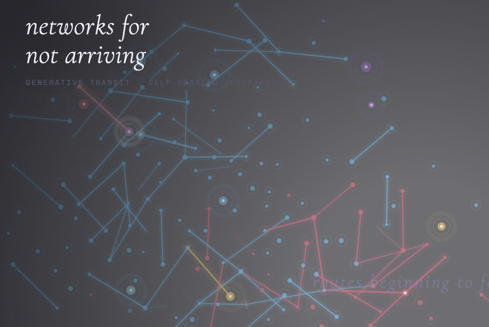
Week seven's vibe code was a sister website to Olivia Jack's "Maps for Getting Lost". My website lets you click real locations to plant stations, and add more interactive controls. Where Olivia's work draws maps to get lost in, mine draws transit networks that forget where they were supposed to be going. The lines grow to resemble transit systems, then slowly erase themselves from both ends, becoming forgotten infrastructure.
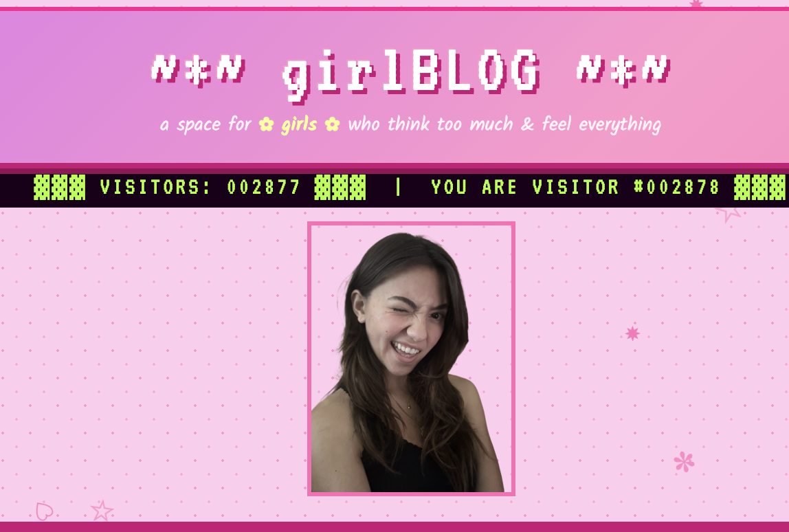
Week eight had us working on an interactive intervention inside one of our preexisting vibe coded projects. I decided to edit my Girl Blog website from week six, and added a padded container for a series of images that cycle.
Reflection on Vibe Coding
At first I was weary of coding alongside an AI assistant but over the course of the semester, I learned to work with it. I agree with most of the anti-ai art discourse online— I don't think anyone should be proudly publishing their entirely vibe coded website and claiming it as their own work. I did find AI to be a useful tool for this class but only to help me with tedious tasks or to break down something I didn't fully understand. Having said this, I still engaged with other tools online like the many helpful videos on youtube or going down reddit rabbit holes. I also frequently asked my peers, Student Assistant and Professor for help/inspiration. No one should be letting AI generate an entire concept, color scheme, theme and text for them without any of their own input. In fact, the times that I was most frustrated with using vibe coding tools was when I would not be specific enough and it would make creative decisions for me that I would then have to undo. At the end of the day, what makes a piece of media special is the perspective and effort of the person that made it and that will always be more interesting than anything a robot can spit out for you.